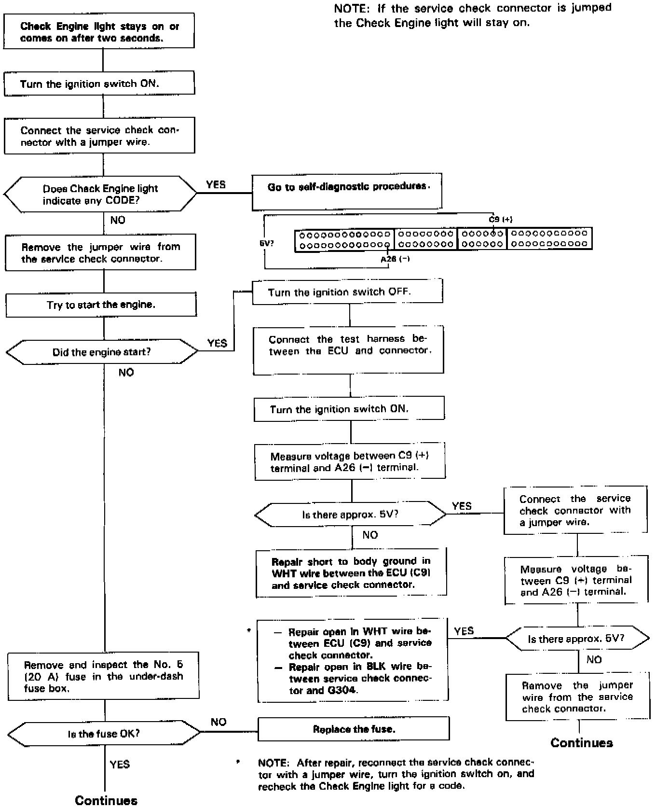
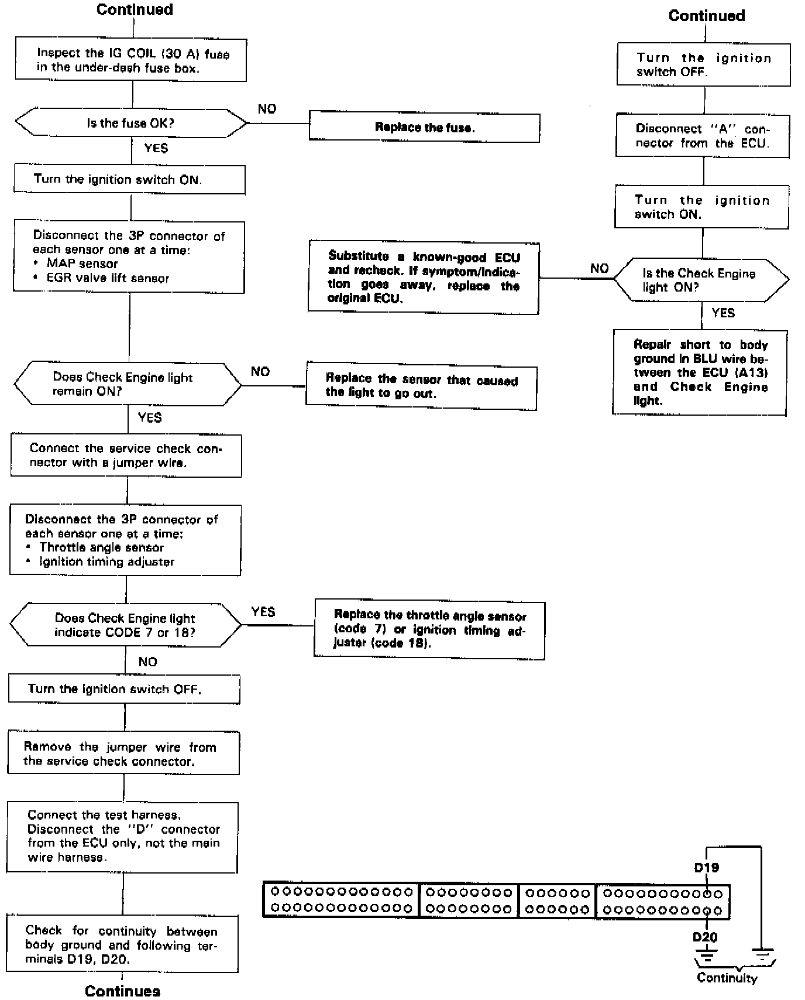
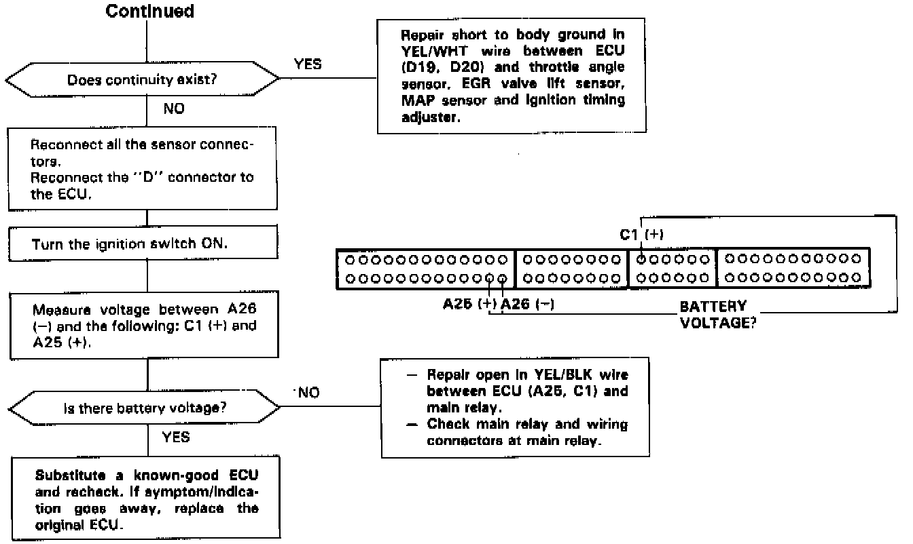

Operation CHARM
: Car repair manuals for everyone.
Home
>>
Acura
>>
1992
>>
Legend Coupe V6-3206cc 3.2L SOHC FI
>>
Repair and Diagnosis
>>
Powertrain Management
>>
Computers and Control Systems
>>
Testing and Inspection
>>
Symptom Related Diagnostic Procedures
>>
Symptom Diagnostic Procedures
>>
Check Engine Light Stays On
Check Engine Light Stays On
CHECK ENGINE LIGHT STAYS ON

PART 1 OF 3

PART 2 OF 3

PART 3 OF 3